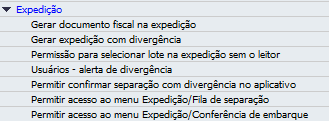

Expedição
Na seção Expedição, você encontrará todas as autorizações que adicionam comportamentos no módulo Expedição e no SAP.
Autorização Gerar documento fiscal na expedição
Definindo “Sem autorização” em Gerar documento fiscal na expedição, o usuário não poderá gerar documentos definitivos ao concluir as separações no menu Fila de separação. Com “Autorização total”, o usuário passará a gerar documentos definitivos.
Autorização Gerar expedição com divergência
Definindo “Sem autorização” em Gerar expedição com divergência, o usuário não poderá gerar documentos definitivos ao concluir as separações quando elas tenham divergência, no menu Fila de separação. Com “Autorização total”, o usuário passará a gerar documentos definitivos, mesmo que possuam divergências.
Autorização Permissão para selecionar lote na expedição sem o leitor
Na Fila de separação, quando “Sem autorização” em Permissão para selecionar lote na expedição sem o leitor, para itens que são controlados por lote/série, no momento de selecionar o lote/série, não será permitido que o usuário selecione manualmente, será exigida a leitura do lote/série. Com “Autorização total”, será possível selecionar o lote/série manualmente.
Autorização Permitir confirmar separação com divergência no aplicativo
Definindo “Sem autorização” em Permitir confirmar separação com divergência no aplicativo, o usuário não poderá concluir as separações quando elas tem divergência na contagem dos itens. Com “Autorização total”, o usuário passará a concluir as separações, mesmo que possuam divergências.
Importante
Essa autorização de usuário sobressai a configuração definida na aba Expedição!